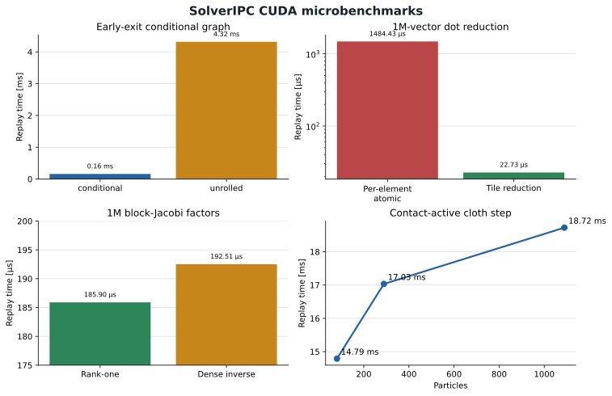
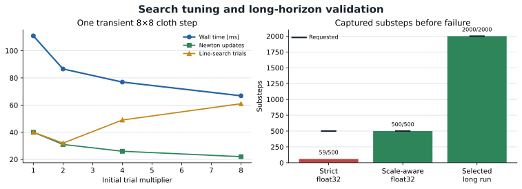

Technical design report
Incremental potential contact in Newton
A Warp-native solver with captured nonlinear optimization
Abstract
Incremental potential contact (IPC) combines implicit time integration, a contact barrier, and continuous collision detection to advance contacting solids along feasible optimization trajectories. This update turns the report's smallest useful subset into an experimental Newton SolverIPC: particles and anisotropic Style3D cloth against one fixed plane, with a true incremental objective, exact point–plane step bounds, transactional state commit, matrix-free contact curvature, and nested CUDA-conditional Newton, PCG, and Armijo loops. A 2,000-substep captured cloth campaign completed with no failures or penetrations. Warp Tile dot reductions were 65× faster than a per-element atomic baseline, conditional early exit was 27× faster than a fixed unrolled graph in its intended no-work case, and an analytic rank-one block inverse was 3.4% faster than dense 3×3 inversion. This is not yet general mesh IPC: self-contact, point–triangle/edge–edge CCD, friction, tetrahedra, rigid bodies, multiple worlds, and differentiation remain explicit limitations.
1. Recommended implementation
Implement IPC as a new solver in Warp, with the existing step(state_in, state_out, control, contacts, dt) interface. Use Newton's particle positions, velocities, mass, tetrahedra, triangles, world identifiers, and material authoring. Build a dedicated contact surface and optimization workspace before capture. Keep trial positions internal until a step satisfies its acceptance policy.
The first complete version should support deformable tetrahedral meshes, self-contact, and fixed mesh or plane obstacles, with backward Euler and regularized Coulomb friction. Extend to cloth, finite thickness, and dynamic rigid bodies in separate stages. A production implementation should depend only on Warp, NumPy, and the standard library. libuipc and IPC Toolkit are valuable development references and optional offline comparison tools; neither should become a required runtime dependency.
Three design decisions are central:
- Make collision detection part of the nonlinear solve. IPC needs all relevant point–triangle and edge–edge stencils, including contacts that appear along a search direction. A reduced manifold of contact points and normals is insufficient.
- Use fixed storage with changing device counts. Contact sets, Newton iterations, preconditioned conjugate gradient (PCG) iterations, and accepted step lengths may change on every replay. Buffer addresses and launch structure must remain stable; capacity exhaustion must prevent a state commit.
- Separate feasibility, convergence, and throughput. An intersection-free iterate is not necessarily a converged time step. Graph capture reduces launch overhead but does not resolve ill-conditioning. Report both properties independently.
The branch now implements a deliberately bounded cloth/particle–plane vertical slice. The broader mesh-contact design below remains the recommendation for production IPC; names and capacities that are not listed in the implementation update remain proposals. No existing solver or public symbol was renamed or removed.
Implementation update: experimental SolverIPC
The eric/solver-ipc branch adds a public, lazy-loaded newton.solvers.SolverIPC, a dedicated cloth_ipc example, and an ipc option in cloth_hanging. It reuses Style3D's authored anisotropic cloth data and fixed projective-dynamics sparse operator, but evaluates the true stretch, shear, bending, inertial, and normalized barrier energy during Armijo search.
| Implemented now | Deliberately not claimed |
|---|---|
| Particles and Style3D triangle cloth; one fixed plane; configurable finite separation | Point–triangle or edge–edge contact, cloth self-contact, mesh obstacles, friction |
| Backward-Euler objective; normalized logarithmic barrier; analytic gradient and rank-one normal curvature | Neo-Hookean tetrahedra, inversion filtering, rigid/articulated degrees of freedom |
| Exact linear point–plane collision step bound, 0.9 safety factor, true-energy Armijo backtracking | General primitive CCD or a proof for nonlinear trajectories |
Preallocated workspace; nested wp.capture_while on CUDA; fixed unrolled fallback | CPU APIC parity for nested conditional replay, dynamic topology, multiple independent worlds |
| Transactional work state, exact rollback, terminal status, residual/gap/iteration diagnostics, persistent failed-step count | Differentiation, warm starts, adaptive time stepping, capacity-managed broad phase |
Implementation boundary. The branch is a useful captured vertical slice, not a relabeling of penalty contact as full IPC.
cloth_ipc example, simulated at 120 Hz inside a two-substep CUDA graph and rendered at 30 fps. Point–plane separation is 0.01 m; the visible sheet contains 289 particles and 512 triangles.Captured solve structure
Each step copies the committed input into private work arrays, forms the inertial predictor, and validates initial gaps. The outer device condition drives nonlinear updates. Every update assembles force residuals, prepares a block preconditioner, invokes fixed-budget PCG with device reductions, checks descent, computes the exact point–plane collision step bound, and enters a nested device-conditioned line search. Only CONVERGED publishes positions and velocities; every other status copies the input through unchanged. A persistent failed_steps device counter prevents a later substep from hiding an earlier failure.
The contact Hessian action is matrix-free: each particle contributes (h_c,n n^T p). The default preconditioner uses the Sherman–Morrison identity for (aI+h_cnn^T), avoiding a generic inverse:
PCG originally inherited a native reduction that allocates inside Warp's conditional body and therefore could not be captured. The implemented reduction groups 256 lanes, applies wp.tile_sum(wp.tile(value)), and emits one atomic addition per tile. It is allocation-free during replay and reduces one million atomics to 3,907 in the measured case.
2. Mathematical and numerical contract
Let \(x\in\mathbb{R}^{3N}\) collect the positions of \(N\) free deformable vertices in meters, \(v_n\) their velocities in meters per second, and \(h>0\) the time step in seconds. The index \(n\) identifies the current time step. Let \(M\) be the positive lumped mass matrix in kilograms after eliminating prescribed degrees of freedom. For constant external forces \(f_{\mathrm{ext}}\) in newtons, define the inertial prediction \(\tilde x=x_n+h v_n+h^2M^{-1}f_{\mathrm{ext}}\). A useful energy convention for backward Euler is
Each term has units of joules. \(E_{\mathrm{elastic}}\) is elastic potential energy, \(B\) is normal-contact barrier energy, and \(D\) is the incremental friction potential for the current lagged friction data. Multiplying the entire objective by \(h^2\) gives an equivalent minimizer; multiplying only some terms changes the model. Forces that depend on position require their own consistent potential or an explicitly documented approximation. Zero-mass and kinematic vertices are eliminated or constrained, not passed through \(M^{-1}\).
A concrete first constitutive model is compressible neo-Hookean elasticity. For tetrahedron \(e\), form \(F_e=D_{s,e}D_{m,e}^{-1}\) from current and rest edge matrices and set \(J_e=\det F_e>0\). Newton already stores the inverse rest matrix in tet_poses. With rest volume \(V_e\) in cubic meters and Lamé parameters \(\mu_e,\lambda_e\) in pascals, use
Expose this constitutive choice explicitly; shared Lamé parameters do not imply that every existing Newton solver uses the same energy. Validate element derivatives and rest-volume conventions independently. Nearly incompressible materials may need a mixed formulation or another discretization to avoid locking; a better PCG preconditioner alone cannot fix that modeling error.
For a zero-thickness primitive pair \(c\), let \(d_c(x)>0\) be its Euclidean distance in meters, and let \(\hat d>0\) be the contact activation distance. To make units explicit, this report uses the dimensionless squared-distance ratio \(s_c=d_c^2/\hat d^2\) and a normalized clamped logarithmic barrier:
Here \(\mathcal C\) is the relevant primitive stencil set and \(k_c\) is an energy scale in joules, including any discretization weights. This is a rescaling of the squared-distance log barrier, not a new contact law. An implementation using an unnormalized squared-distance barrier must convert its stiffness accordingly: \(k_c=\kappa_c\hat d^4\). The parameter \(\kappa_c\) then has units of joules per meter to the fourth power. Do not reuse Newton's penalty stiffness values as IPC stiffness without this conversion and a documented weighting convention. The original method and its technical supplement motivate the barrier and the filtered optimization procedure. [1] [2]
For nonzero thickness, define a separate minimum separation \(\xi_c\geq0\) in meters. A squared-distance formulation can use \(s_c=(d_c^2-\xi_c^2)/((\xi_c+\hat d)^2-\xi_c^2)\); its activation is at \(d_c=\xi_c+\hat d\). The same minimum separation must be used by collision detection. Thickness, activation distance, and broad-phase padding are different quantities. Codimensional IPC supplies the broader treatment needed for cloth and rods, including strain limiting. [3]
Optimization and acceptance
At iteration \(k\), compute the energy gradient \(g_k=\nabla\Phi(x_k)\) in newtons and a symmetric positive-definite search operator \(H_k\) in newtons per meter. Solve approximately for a direction \(p_k\) in meters from \(H_k p_k=-g_k\). Positive-semidefinite local Hessian projection or a validated Gauss–Newton approximation provides a search operator; line search still evaluates the true chosen objective. Check that \(g_k^T p_k<0\), or use a controlled regularization/descent fallback.
Continuous collision detection (CCD) finds a conservative collision bound along \(x_k+\alpha p_k\), where \(\alpha\in[0,1]\) is dimensionless. Also bound the step before any tetrahedron loses positive orientation, and before any exact strain constraint is violated. Starting below these bounds, backtrack until the Armijo inequality holds:
A value such as \(c_1=10^{-4}\) is an algorithm parameter, not a physical material parameter. Use a safety fraction below one for collision and inversion bounds. Checking only the endpoint can miss a surface crossing followed by separation. A barrier evaluated at endpoints cannot repair this omission.
Initialize optimization from the previous feasible configuration, not blindly from the possibly penetrating inertial prediction. Prescribed boundary motion must itself admit a feasible path. For incompatible motion, report failure or follow an explicit continuation policy; silently teleporting a collider invalidates the guarantee. The nonpenetration claim is conditional on feasible initialization, complete collision coverage, conservative CCD, valid orientation bounds, and adequate numerical precision.
Friction and accuracy
For each lagged contact, retain a normal-force magnitude \(\lambda_c\geq0\) in newtons, friction coefficient \(\mu_c\geq0\), tangent basis, and contact interpolation weights. If \(u_c(x)\in\mathbb{R}^2\) is the tangential relative displacement over the time step in meters, use \(D=\sum_c\mu_c\lambda_c f_\epsilon(\|u_c\|)\), where \(f_\epsilon\) is a smooth approximation to length and \(\epsilon=h\epsilon_v\) for a speed regularization \(\epsilon_v\) in meters per second. This makes friction an energy in joules. Freeze these data within an inner Newton/line-search solve, then refresh them in a bounded outer lagging loop. Retain stable stencil identity when candidates reorder. [4]
Expose separate tolerances for nonlinear force residual, linear residual, geometric distance, friction lagging, and CCD. A tiny accepted displacement caused by a tiny CCD step is not sufficient evidence of force balance. If the iteration budget ends, return a diagnostic failure under the default strict policy. An optional policy that publishes a feasible but unconverged iterate must label that outcome explicitly. Barrier stiffness adaptation happens between fixed-objective solves; recompute the reference energy and derivatives when stiffness changes.
3. Research and implementation evidence
The literature points to an optimization architecture rather than a drop-in force kernel. The following references have distinct roles; published speedups are not predictions of Newton performance.
| Work | Relevant contribution | Design consequence |
|---|---|---|
| IPC, 2020 [1] | Barrier-based implicit elastodynamics with collision-filtered optimization. | Establish a correct objective, complete stencils, and feasible search before optimizing throughput. |
| Codimensional IPC, 2021 [3] | Mixed-dimensional contact, thickness, and strain limiting. | Treat cloth and rods as additional geometry and constitutive work, not a switch on a tetrahedral solver. |
| Rigid IPC, 2021 [5] | Intersection-free rigid-body simulation, including nonlinear motion paths. | Rigid rotation requires a trajectory-aware CCD contract. |
| Affine Body Dynamics, 2022 [6] | A small affine state with an orthogonality potential for stiff bodies. | An efficient coupling option, but an affine matrix is not a Newton rigid transform. |
| GIPC, 2024 [7] | Analytic eigensystems and a GPU-oriented approximation of contact Hessians. | Prefer compact contact operators over generic dense eigendecomposition per pair once reference derivatives pass. |
| StiffGIPC, 2025 [8] | Connectivity-enhanced multilevel additive Schwarz, efficient affine assembly, and inexact cubic strain limiting. | Preconditioning and reduction traffic are first-class costs. Its inexact strain limit must not be described as an exact barrier constraint. |
| Convergent IPC, 2023 [9]; Geometric Contact Potential, 2025 [10] | Continuum/discretization and geometric consistency issues in contact potentials. | Preserve surface measures and topology metadata; test mesh refinement and sliding artifacts before claiming physical accuracy. |
| Tight Inclusion and Scalable CCD [11] [12] | Conservative collision predicates and scalable CPU/GPU implementations. | Use independent collision oracles and explicit unresolved-query handling. |
| Barrier-free augmented-Lagrangian contact, 2026 [13] | Addresses barrier conditioning and time-of-impact locking through a different constrained solver. | Keep contact law and search policy separable. Do not call the alternative the same discrete IPC objective. |
| AGIPC, 2026 [14] | Algebraic coarsening inside the solve without changing fine-mesh topology. | A future acceleration path: collision geometry can remain fine even when the solve uses a reduced space. |
Table 1. Research contributions and proposed implementation consequences.
Geometric Contact Potential is the current title of the work originally posted as Orientation-aware IPC. The 2026 literature matters to a new implementation: StiffGIPC is a useful reference, but not the endpoint of GPU contact research. YASPS also provides a current example of symbolic extensibility; it is worth studying for generated local kernels, without adding a symbolic runtime requirement to Newton. [15]
What to take from libuipc
The inspected libuipc revision is 9c5710ee (2026-09-04). Its organization separates global vertices and surface primitives, constitutive contributions, trajectory filtering, contact assembly, and the global linear solve. Newton can adopt that separation while keeping its own ModelBuilder → Model → State lifecycle. Material/contact tables should compile to device arrays; constitutive extensibility should resolve to a fixed launch schedule before capture, not Python callbacks executed during replay. [source]
libuipc already has meaningful CUDA graph support. Its PCG graph modes include host-checked block replay and a conditional while graph. However, the outer IPC advance loop has host Newton/line-search control, and energy evaluation copies results to host. Therefore, wrapping its public advance call is not evidence that a complete Newton step can execute inside an enclosing Warp graph. A backend adapter would need explicit stream ownership, stable zero-copy buffers, no hidden recapture, and a much broader control-flow refactor.
Other repositories and reuse boundary
ipc-sim/IPC is the original full simulation reference. IPC Toolkit at b778f64e is the better function-level reference for distance classification, barrier derivatives, friction, and CCD. Its separation of collision geometry and potential evaluation is directly useful for Newton's design. CPU wrappers around these functions would still introduce host interaction and allocation unless specifically redesigned.
GPU_IPC and Stiff-GIPC provide GPU optimization references. Rigid IPC and Autodesk's affine-body-dynamics implementation clarify the rigid/affine modeling choice. Scalable CCD is relevant to a robust parallel collision subsystem. Study algorithms and compare small numerical fixtures before porting kernels. libuipc's top-level license is Apache-2.0, IPC Toolkit's is MIT, and Stiff-GIPC's repository declares MPL-2.0 with an additional commercial-use note in its README; copied code needs a source-specific licensing review. No third-party implementation code is included in the report's probe.
4. Audit of current Newton main
The baseline is upstream main at 853c4fef9543fae380de59464cb804465c041721, fetched on 2026-09-07. It identifies itself as Newton 1.7.0.dev0 and requires warp-lang>=1.17.0. The following observations are tied to this revision, rather than an older Newton API.
A bounding volume hierarchy (BVH) accelerates primitive queries by grouping their bounding boxes. IPC can reuse that infrastructure, but needs swept bounds and conservative continuous tests in addition to discrete proximity queries.
| Existing component | Useful foundation | Required IPC adaptation |
|---|---|---|
| SolverBase | Common step, reset, model-change notification, and solver-owned collision scheduling. Currently only VBD opts into pipeline ownership. | Add SolverIPC; retain the step signature. Its mandatory CCD cannot be disabled by a generic contact-frequency setting. |
| Model topology and materials | Particles, triangles, tetrahedra, rest data, material coefficients, and shared soft-mesh adjacency. | Compile a complete contact surface, ownership maps, and reference measures. Existing bending edges are four-index stencils, not a universal two-index collision-edge list. |
| Contacts | Bounded contact storage, device counters and generations, optional force outputs, soft-mesh collision storage. | Keep it as reporting/interoperability storage. Do not make reduced rigid or particle–shape contacts the IPC optimization representation. |
| TriMeshCollisionInfo | Publicly exported bounded vertex–triangle and edge–edge rows; counts can exceed capacity. | Detect overflow before solving. Clamped access prevents memory errors but cannot guarantee that omitted pairs are safe. |
| TriMeshCollisionDetector | BVH refits at supplied positions and world-aware discrete queries. | Add swept bounds, robust CCD, canonical pair deduplication, and precise feature stencils. Audit adjacency exclusions and reference-distance filtering for IPC. |
| CollisionPipeline | Rigid/soft collision configuration and an explicit collision-update horizon. | A horizon for speculative contacts is not a conservative minimum-distance CCD query along an optimizer direction. |
| Style3D | Implicit cloth, PCG infrastructure, and a build/refit split for collision BVHs. | Reuse patterns; audit contact and linear operators independently rather than assuming their current numerical model is IPC. |
| Kamino iterative control | Per-world masks, global loop conditions, and conditional versus unrolled schedules. | Extract suitable common machinery only after IPC requirements are proven; do not couple a new solver to Kamino internals. |
| Experimental coupling interface | Proxy states, mass queries, and wrench exchange. | Useful interoperability, but partitioned force exchange does not establish monolithic IPC feasibility. |
Table 2. Source audit of Newton main at the pinned revision.
Internal source links above document the audit; examples should import only public Newton modules. The current geometry namespace exports TriMeshCollisionInfo but not the internal detector as a general IPC API. A new reusable geometry type should be exported through newton.geometry, with public documentation generated through docs/generate_api.py.
5. Implemented Newton API and future extensions
The branch implements the smallest useful public addition as newton.solvers.SolverIPC with nested Config and Status types. Geometry remains internal and intentionally limited to a fixed plane. Promote a shared newton.geometry.ContactSurface and swept-query interface only when the mesh-contact milestone provides a second consumer or a clear extension requirement.
| Implemented contract | Purpose and capture behavior |
|---|---|
SolverIPC.Config | Plane geometry, minimum separation, activation distance, barrier scale, force/energy tolerances, bounded Newton/PCG/line-search budgets, rank-one or dense preconditioning, and conditional or unrolled graph mode. Float values and dt are fixed on graph capture. |
register_custom_attributes(builder) | Registers the Style3D anisotropic cloth attributes before calling style3d.add_cloth_grid or add_cloth_mesh. |
step(..., contacts=None, dt=h) | Runs optimization without host readback. A non-None external contact manifold is rejected because IPC owns its current plane query. |
SolverIPC.Status | CONVERGED, invalid initialization, linear breakdown, line-search exhaustion, and Newton exhaustion. Only convergence commits. |
diagnostics | Device arrays for terminal status, residual, minimum gap, Newton and line-search counts, plus a persistent failed-step count. Reading with .numpy() is outside capture. |
Table 3. Additive API implemented at 86daf4b7. Capacity types, general contact surfaces, reset masks, and contact-force export remain future interfaces.
The implementation does not add an IPC-wide parameter to every existing solver or enlarge every State or Contacts. Temporary iterates, PCG vectors, contact curvature, and diagnostics belong to each solver workspace.
Executable public usage
This is the core of the checked-in cloth example. The 0.01 m minimum separation matches the authored particle radius; the 0.05 m activation distance is a distinct numerical envelope.
import warp as wp
import newton
from newton.solvers import SolverIPC, style3d
builder = newton.ModelBuilder(gravity=(0.0, 0.0, -9.81))
SolverIPC.register_custom_attributes(builder)
builder.add_ground_plane()
style3d.add_cloth_grid(
builder,
pos=(-0.64, -0.64, 1.2),
rot=wp.quat_rpy(0.12, -0.18, 0.2),
vel=(0.0, 0.0, 0.0),
dim_x=32,
dim_y=32,
cell_x=0.04,
cell_y=0.04,
mass=0.005,
particle_radius=0.01,
tri_aniso_ke=wp.vec3(5.0e2, 5.0e2, 5.0e1),
edge_aniso_ke=wp.vec3(2.0e-5),
)
model = builder.finalize(device="cuda:0")
state_a, state_b = model.state(), model.state()
solver = SolverIPC(
model,
config=SolverIPC.Config(
minimum_separation=0.01,
contact_distance=0.05,
barrier_stiffness=0.005,
max_newton_iterations=64,
max_pcg_iterations=24,
absolute_tolerance=1.0e-2,
relative_tolerance=2.0e-3,
energy_tolerance=1.0e-5,
),
)
h = 1.0 / 120.0
with wp.ScopedCapture(device=model.device) as capture:
solver.step(state_a, state_b, None, None, h)
solver.step(state_b, state_a, None, None, h)
wp.capture_launch(capture.graph) # advances two steps
assert solver.diagnostics.failed_steps.numpy()[0] == 0The two-step graph deliberately returns to the same state buffer. Python variable swaps occur while recording and do not run at replay; a captured single a→b step will keep reading a unless the caller supplies a defined copy, alternates graphs, or uses a device-side state convention. Keep graph inputs, outputs, BVHs, and scratch alive for the graph's lifetime.
A floating-point dt passed by value is fixed in the graph. The initial API can require recapture when it changes. If adaptive time steps become important, add an optional device time-step array in the IPC configuration and ensure every dependent kernel, tolerance conversion, predictor, and velocity update reads it. The same rule applies to stiffness, counts, launch dimensions, and per-world activity: changing a Python field cannot update an already captured scalar.
Shared collision API, after the first solver
Use a capability-based primitive query interface rather than overloading collide(state, contacts, dt) with ambiguous semantics. A prepared contact surface should expose immutable primitive indices, ownership and world maps, adjacency/exclusion data, and a position mapping from solver degrees of freedom. A query backend should accept current positions, search displacements, a device step bound, fixed output buffers, and device count/status arrays.
Conceptually, separate refit_swept(...), find_candidates(...), classify_active(...), and compute_step_bound(...). Queries must say whether they cover discrete positions, linear trajectories, or nonlinear rigid trajectories. Keep the current solver-owned contact scheduling API unchanged for existing solvers. IPC should reject schedules that skip mandatory safety queries; reuse a candidate set only under a proven conservative envelope.
6. Execution during graph capture
Graph construction records a program of operations. Replay executes it with new data. A graph-compatible IPC step must express data-dependent branches with device conditions or masked fixed schedules, rather than Python decisions based on copied scalars. Warp 1.17 provides wp.capture_while and wp.capture_if. Native CUDA conditional nodes require a compatible Warp build and NVIDIA driver supporting CUDA 12.4 or later. CPU capture uses Warp's API-capture representation (APIC), a different execution path. [16]
The branch confirms nested CUDA conditional capture for the Newton and Armijo loops, including PCG inside the outer condition. An initial attempt failed because the inherited PCG dot reduction allocated scratch inside the conditional body; replacing it with a prepared Tile reduction removed that operation. CPU eager execution passes, but nested CPU APIC replay did not match eager trajectories reliably and is therefore disabled in the examples rather than advertised.
Preparation outside the graph
Extract boundary faces from tetrahedra, canonicalize edges, generate surface-to-volume maps, compute rest geometry and material data, and construct BVHs. Reserve all candidate, sorting, prefix-scan, reduction, CCD, preconditioner, and linear-solver memory. Build static sparsity or incidence structures and compile every kernel specialization that may execute. Exercise both successful and failure paths on scratch state. Python validation and NumPy processing are appropriate here. Capacity estimates from a warm-up scene are useful, but are not worst-case guarantees.
Device-controlled step
- Initialize the predictor and per-step working state. Preserve a latched failure from earlier substeps or replays until an explicit reset/recovery. Validate prescribed motion and the current feasible state.
- For each bounded friction lagging iteration, freeze friction data and establish the current objective.
- For each bounded Newton iteration, refresh required discrete candidates, evaluate gradient and local search factors, and update the preconditioner. All counts and overflow flags remain on device.
- Run bounded PCG using device residual reductions. Zero-residual, breakdown, and inactive-world cases must branch before divisions; multiplying a NaN by a zero mask does not remove it.
- Construct a conservative swept candidate set for the proposed direction. Reduce CCD and element-orientation bounds to a per-world safe step length.
- Run bounded backtracking. Reclassify or rebuild trial active stencils from a complete candidate superset, evaluate the same true objective, and accept on device.
- Check convergence and friction consistency. On success, update velocities and commit state. On failure, copy the last committed input state to the output and latch the per-world failure.
Pass Python callback functions containing only launches to nested capture_while calls. Do not assemble nesting by inserting a previously captured graph containing conditional nodes as a child graph; Warp documents limitations on that pattern. The callbacks run while recording, not once per optimization iteration during replay. The local probe verifies this distinction.
The fallback is a fixed number of launches with per-world masks, not a host-synchronized convergence loop inside capture. Mask every numerical operation that can be undefined after convergence. Naively unrolling a friction × Newton × line-search/PCG budget can produce a very large graph; an alternative is a bounded device phase machine with a compact repeated dispatch body. Benchmark graph construction time, graph memory, and launch overhead before choosing that fallback for large scenes. Expose which execution mode was selected.
What must remain stable
Array addresses, capacities, topology, compiled kernel options, scalar launch parameters, and external stream dependencies form the graph contract. Launch over capacities and check a device count in the kernel, or use a supported device-count launch mechanism only after validation. A host-side slice or a sparse matrix rebuilt from the latest downloaded contact count breaks this contract. Allocating from a CUDA memory pool can be supported in some graphs, but does not make unknown-size host allocation or conditional-node scratch allocation safe. This design deliberately preallocates.
Use one captured stream initially. A future C++/CUDA extension must consume the provided stream, expose prepared scratch, and avoid hidden synchronizations or private graph rebuilds. A separate stream is acceptable only with dependencies represented in the enclosing graph. Reading a scalar for logging, printing residuals from Python, or returning a host time-of-impact value is outside the captured execution boundary.
Failure and recovery are part of the API
Suggested SolverIPC.Status values include CONVERGED, INVALID_INITIAL_STATE, CAPACITY_EXCEEDED, CCD_UNRESOLVED, LINEAR_BREAKDOWN, LINE_SEARCH_EXHAUSTED, NEWTON_EXHAUSTED, and FRICTION_EXHAUSTED. Each world also needs an independent sticky failure bit so a later substep cannot overwrite the evidence with apparent success.
After replay, the host can inspect status, increase capacity, rebuild scratch, reduce the time step, and recapture. Device-only recovery is possible with bounded retries and preallocated alternate storage, but requires a defined time-advancement policy. A failed world must not be reported as having advanced simulation time. In a training batch, expose an advanced-time or valid-step mask alongside state so downstream observations and rewards can handle this outcome.
7. Collision geometry and feasibility
Primitive coverage
Compile contact geometry independently of rendering and elasticity connectivity. Extract all exterior tetrahedral faces with consistent orientation; include authored cloth triangles and isolated rod edges when those features become supported. Produce unique two-vertex collision edges, point ownership, and maps back to particle or body coordinates. Newton's edge_indices contains bending stencils [o0, o1, v1, v2]; assuming it is a complete universal contact-edge mesh is unsafe.
For deformable triangle surfaces, point–triangle and edge–edge candidates must classify into the appropriate lower-dimensional distance features. Point–point and point–edge contributions appear at feature boundaries; codimensional scenes additionally need their own standalone point/edge queries. Canonical keys avoid double counting, including the fact that Newton's existing edge query records contacts from both source edges. Store world identity in keys and reductions.
Exclude topologically incident configurations according to the contact formulation, not a broad neighborhood heuristic. VBD's n-ring or reference-distance exclusions may omit physically relevant IPC constraints on folded or tightly spaced geometry. For nearly parallel edges, use the consistent mollified distance/barrier treatment and its derivatives. Dropping a troublesome edge pair or using only an approximate normal is not a replacement. Degenerate triangles and zero-length edges need explicit preprocessing or a robust reduced-feature policy.
Two sets: active barriers and swept candidates
An active barrier set contains primitives within the activation distance at a configuration. A swept candidate set conservatively covers motion over a search interval, including pairs outside the current activation band. For linear vertex trajectories, an axis-aligned box around the endpoint vertex bounds encloses the swept triangle or edge. Expand boxes for minimum separation and the activation envelope used by trial energy queries. Use a broad phase over those boxes followed by exact feature evaluation.
After changing the direction, rebuild the swept envelope. During backtracking, either reuse a superset known to cover all smaller trial steps or rerun a complete query. The current active set alone cannot supply the CCD bound, and the energy at a trial point must include newly active barriers. A contact cache may reduce work only while an explicit displacement envelope proves coverage.
Bounded conservative CCD
A GPU implementation can begin with conservative advancement or additive CCD for linear primitives, validated against an independent double-precision oracle. A bounded inclusion method can offer stronger floating-point conservatism, but interval queues, error bounds, and termination semantics require careful implementation. Tight Inclusion documents conservative outcomes and minimum separation; Scalable CCD offers a GPU reference. [11] [12]
Reserve queue storage and track unresolved queries. When a query cannot certify a safe step within the budget, return a smaller certified bound if available, otherwise fail the step. Never interpret an iteration limit or queue overflow as “no collision.” Broad-phase overflow, active-set overflow, and CCD queue overflow are separate conditions; all can invalidate a proposed update.
Positive volume is a second safety constraint. For a tetrahedron moving linearly in vertex coordinates, its oriented volume is a cubic polynomial in step length. Bound the first loss of positive determinant with a conservative numerical method. A finite “stable” elastic energy for inverted elements is not itself an inversion barrier. Friction, shell strain bounds, and rigid trajectories each add their own consistency requirements.
8. Efficient linear algebra and batching
Avoid dynamically assembling a global sparse contact Hessian on the host each Newton iteration. Start with fixed topology for inertia and elastic terms, and a matrix-free contact operator over active stencils. For local stencil \(c\), let \(G_c\) gather the global search vector into local coordinates and \(K_c\) be its positive-semidefinite local search matrix. For a vector \(p\), apply
Here \(H_{\mathrm{elastic}}\) is a stabilized elastic search operator. Store compact analytic factors when possible; recomputing full distance Hessians during every PCG multiplication may cost more than caching them once per Newton iterate. GIPC motivates this factorization direction. Keep an explicit assembled operator for tiny correctness tests and use it to compare symmetry, matrix-vector products, and descent directions. [7]
Memory tradeoff
A four-vertex stencil has 12 positional degrees of freedom. A dense 12×12 matrix stores 144 scalars: 576 bytes in float32 or 1,152 bytes in float64. For one million reserved contacts that is 576 MB or 1.152 GB in decimal units, before indices, friction, CCD, and solve scratch. Four 32-bit vertex indices alone add 16 MB. These are arithmetic storage estimates, not measurements. Compact factors or symmetric block storage can reduce this cost substantially; the actual layout must include its metadata and padding.
Matrix-free scatter introduces atomic contention. Start with direct accumulation for simplicity, then evaluate segmented reduction, contact sorting, or graph coloring if profiling justifies it. Deterministic reductions should be an explicit option with measured cost. Stable ordering improves reproducibility but does not by itself prove bitwise equality across hardware.
Preconditioning
Use 3×3 block Jacobi as an initial correctness baseline, not the final performance claim for stiff solids. A connectivity-based multilevel additive Schwarz preconditioner is a plausible production direction: prepare fixed mesh aggregates, refresh numeric block values, and include contact-induced coupling where beneficial. StiffGIPC motivates this choice, but Newton's tile layout, memory traffic, and batch sizes need measurement. If hierarchy structure changes dynamically, reserve its maximum storage or rebuild outside capture. [8]
For the implemented plane stencil, the contact update is exactly rank one. Sherman–Morrison produces the same solution as a dense 3×3 inverse in CPU/CUDA tests and measured 185.90 µs rather than 192.51 µs for one million blocks. This 3.4% construction gain is worthwhile because it also stores the contact operator as one scalar and one shared normal, but it is not a substitute for a stronger cloth-wide preconditioner. Increasing PCG iterations did not cure float32 Armijo failures during tuning; scale-aware nonlinear/energy stopping was the effective intervention.
For small rigid systems, assembled block matrices and direct solves may be competitive. For large deformables, matrix-free contact plus an assembled static elastic pattern may be better. Select by measured full-step cost, including preconditioner construction and collision work. A speedup in PCG alone can disappear when CCD or assembly dominates.
Independent worlds
Newton's replicated-world model is important for robotics. Keep one residual, step length, barrier adaptation state, and nonlinear/linear activity mask per world. A global loop condition is the logical OR of active worlds; all energy sums, dot products, minima, and tolerance comparisons remain segmented by world. A single global PCG dot product couples otherwise independent solves algorithmically and lets one difficult environment control all others.
Reserve per-world quotas or segmented shared pools to prevent a dense-contact world from exhausting storage for unrelated worlds. Shared static obstacles can be represented once, but their candidate ownership must be assigned to each querying world. Bucket worlds by topology and expected difficulty when the cost of inactive lanes becomes significant; each bucket can have its own prepared graph. Keep masks and targets in fixed device arrays so selected-world resets do not force recapture.
Precision
Use float64 reference computations for barrier derivatives, gap tests, energy reductions, and CCD. Newton's normal particle state uses float32; converting it to float64 cannot recover geometric information already lost. A production mixed-precision path should accumulate sensitive quantities in float64, use world-local coordinates where appropriate, and define scale-dependent tolerances. Roundoff during final float32 state writeback can close a tiny gap; validate the committed representation or maintain a conservative separation margin that accounts for writeback error. Consumer GPU float64 throughput is a hardware-dependent tradeoff to measure.
9. Rigid bodies, articulation, and differentiation
Three rigid-body strategies have different semantics. They should not be hidden behind a single implementation toggle.
| Strategy | Benefits | Newton implications |
|---|---|---|
| Prescribed/fixed collider | Smallest deformable IPC implementation; no additional unknowns. | Require a defined collision-free trajectory for moving obstacles. Contact reactions can be reported, but this is not two-way coupled dynamics. |
| Exact rigid coordinates | Preserves Newton's body transform and spatial velocity meaning. | Use six-dimensional tangent increments, rigid inertia, position Jacobians, and CCD for the actual rotational interpolation. |
| Affine body coordinates | Twelve unknowns per body and linear vertex mapping simplify coupled assembly and linear-path CCD. | Store translation plus a 3×3 affine matrix and its velocity explicitly. Orthogonality energy approximates rigidity; outputting a quaternion alone loses deformation. |
Table 4. Rigid and affine representations require different state and trajectory semantics.
For the rigid option, let \(q\) be generalized body coordinates and \(x(q)\) the contact-vertex positions. The contact gradient pulls back with \(J=\partial x/\partial q\): \(g_q=J^Tg_x\). An exact Hessian also contains the curvature term \(\sum_i(g_x)_i\nabla_q^2x_i\), in addition to \(J^TH_xJ\). Dropping it is a Gauss–Newton search approximation, which requires a descent check and true-energy line search. Translation and rotation have different units, so residual norms and preconditioners need meaningful scaling.
Rotating surface points follow curves. CCD over the straight segment between endpoint positions does not automatically bound the intended rotation path. Use conservative nonlinear trajectory bounds, certified subdivision, or the rigid IPC formulation. For affine bodies, a linear search in affine coordinates produces linear vertex paths, but projecting the final affine matrix onto a rotation can itself cause an unchecked collision. Keep affine state authoritative and expose it explicitly if this model is adopted. [5] [6]
Articulations need more than contact forces: joint constraints, limits, actuation, and possibly loop closure must participate consistently in the incremental solve. A stiff joint penalty introduces compliance and conditioning. Exact constraints lead to a saddle-point system or an augmented-Lagrangian treatment; plain PCG cannot directly solve an indefinite Karush–Kuhn–Tucker (KKT) matrix. A reduced-coordinate approach needs forward kinematics, contact Jacobian products, a consistent inertia operator, and trajectory-aware CCD. Evaluate these as a separate milestone.
The existing experimental coupled solver can exchange reactions with another backend, but independently correcting two solvers after a step can invalidate the shared collision path. Describe such coupling as an approximation until a global acceptance/CCD policy or a converged monolithic-equivalent scheme is established.
Differentiability is also a separate contract. Warp kernels with gradients do not make a bounded contact optimizer automatically differentiable in the desired sense. At a converged, locally smooth solution, implicit differentiation solves a transposed linearized optimality system. It must include the chosen friction-lagging dependence and constraints; it must not silently substitute the projected search Hessian for the derivative of the actual residual. Feature changes, solver failures, and active-set transitions need documented semantics. Validate gradients with finite differences away from transitions before adding an adjoint API.
10. CUDA implementation evidence
All measurements below come from commit 86daf4b7 with Warp 1.17.0 on an NVIDIA RTX PRO 6000 Blackwell Server Edition MIG 1g.24gb. The checked-in benchmark source, raw JSON, and plot source preserve exact counts, warmups, batch sizes, medians, and 95th percentiles. Timings describe this narrow implementation and machine; they are not comparisons against general IPC packages.

| Experiment | Measured median | Interpretation |
|---|---|---|
| 4,096 inactive particles, conditional vs 16×8×8 unrolled budget | 0.159 ms vs 4.316 ms | 27.1× early-exit advantage. This is the intended best case for conditional nodes, not a universal solver speedup. |
| 1M-vector dot product, Tile vs one atomic per vector | 22.73 µs vs 1,484.43 µs | 65.3×; both return exactly 1,375,000 in the constructed test. Atomics fall from 1,000,000 to 3,907. |
| 1M scalar-plus-rank-one blocks vs dense 3×3 inverse | 185.90 µs vs 192.51 µs | 3.4% faster and algebraically exact for the plane-contact block. |
| 8×8, 16×16, 32×32 contact-active cloth | 14.79, 17.03, 18.72 ms | 81/289/1,089 particles and 128/512/2,048 triangles; all converged with positive gaps. |
Table 5. Median CUDA graph replay times. Capture costs and tail measurements are available in the raw JSON.
Stability and tolerance selection
A strict 0.005 N absolute tolerance with (10^{-8}) J energy roundoff allowance exhausted its Newton budget after 59 captured substeps. This was a useful failure: all positions and velocities remained finite, rollback prevented an invalid commit, and the persistent counter retained the failure. The selected cloth configuration uses a 0.01 N absolute plus 0.002 relative residual tolerance and a (10^{-5}) J float32 Armijo allowance. It preserves the geometric result while avoiding attempts to distinguish energy changes below reliable accumulation resolution.

| Campaign | Outcome | Worst observed diagnostic |
|---|---|---|
| Strict float32 tuning, 16×16 cloth | 59/500 substeps; safe NEWTON_EXHAUSTED rollback | 64 Newton updates; all state finite |
| Selected tuning, same 250-frame test | 500/500 substeps; zero failures | minimum gap 0.006049 m; 56 Newton updates |
| Selected long horizon | 2,000/2,000 substeps (16.67 simulated s); zero failures | minimum gap 0.006049 m; maximum residual 0.01649 N; final maximum speed 0 |
cloth_ipc example tests | 1,000 CUDA frames at 32×32; 300 CPU frames at 16×16 | persistent failed-step count remained zero |
cloth_hanging --solver ipc | 500 CUDA frames at 16×16; 240 CPU frames at 8×8 | persistent failed-step count remained zero |
Table 6. Every long-run check inspects each substep, not only the final frame. The minimum gap is measured relative to the configured 0.01 m separation plane, so positive values are feasible.
Correctness and regression tests
The Newton test suite adds 16 device-instantiated IPC tests: seven behaviors on both CPU and CUDA plus CUDA captured-replay cases. Fourteen pass and the two CPU APIC conditional-capture variants skip with a documented limitation. Tests compare a particle equilibrium to an independent double-precision bisection reference, cloth forces to central differences of the true energy, rank-one and dense factorization outputs, eager and captured CUDA results, positive gaps through long replay, invalid-state and budget-exhaustion rollback, input immutability, and persistent failure accounting. All 12 neighboring Style3D regression tests also pass. Repository-wide pre-commit checks pass.
# From the Newton branch
uv run --extra dev -m newton.tests -k test_solver_ipc
uv run --extra dev -m newton.tests -k test_solver_style3d
uv run --extra examples python -m newton.examples cloth_ipc \
--viewer null --num-frames 1000 --resolution 32 --test
# From the reports checkout, with the branch on PYTHONPATH
python newton-ipc/tools/benchmark_solver_ipc.py \
--output newton-ipc/data/benchmark_results.jsonOriginal CPU design probes
The local machine exposes Warp's cpu device on macOS arm64. Warp reports that CUDA is not enabled in this build. The accompanying source uses only Warp, NumPy, and Python's unittest; its results JSON records eight passing tests. This is a control-flow and scalar-numerics experiment, not a benchmark or full Newton solver.
The experiment solves four independent one-dimensional particle–plane problems. The coordinate \(x>0\) is distance above the plane in meters, the inertial target is \(y\), mass is 1 kg, and \(h=0.1\) s. With \(\hat d=0.2\) m and normalized barrier scale 0.1 J, the objective is \(50(x-y)^2+0.1\beta(x^2/0.04)\) in joules. All cases start at \(x=0.1\) m. Newton directions use analytic derivatives and the step is bounded to retain at least 10% of the current positive gap for a downward direction. This bound is exact for the one-dimensional linear trajectory; it is not a general mesh CCD implementation.
| Inertial target y [m] | Accepted distance [m] | Newton updates | Result |
|---|---|---|---|
| −0.20 | 0.009762962116 | 4 | Converged; positive gap |
| −0.05 | 0.028421904464 | 7 | Converged; positive gap |
| 0.12 | 0.131237900750 | 3 | Converged; active barrier |
| 0.30 | 0.300000000000 | 2 | Converged; inactive barrier |
Table 7. Measured scalar solutions in float64.
The nonlinear stopping tolerance is an absolute gradient magnitude of \(10^{-7}\) N, with budgets of 40 Newton updates and 24 line-search trials. These four cases each accepted the first CCD-bounded trial at every update, so they do not constitute a challenging backtracking benchmark.
| Test | Evidence | Limit |
|---|---|---|
| Analytic derivatives | Five distances, including both sides of activation, agree with central finite differences. | No triangle feature boundaries or friction derivatives. |
| Eager solve | Four scalar worlds converge with positive gaps. | No elasticity or multi-vertex coupling. |
| Nested captured replay | Two target orderings match eager results within 10⁻¹² m; iteration counts match; Python callback counts do not increase during replay. | CPU APIC, not CUDA graph execution. |
| Fixed schedule | Masked fixed-budget execution matches conditional execution. | No large-graph memory or launch-cost assessment. |
| Newton exhaustion | A zero-update budget records failure and restores the initial state during replay. | No adaptive time-step recovery. |
| Line-search exhaustion | A zero-trial budget records failure and restores the initial state during replay. | No pathological geometric search directions. |
| Invalid initialization | Zero/negative starting gaps are rejected independently while valid worlds solve. | No mesh intersection detector. |
| Bounded append | Seven emitted candidates into capacity three retain total count seven and set overflow without writing beyond storage. | Overflow signaling only; no full mesh transaction. |
Table 8. Original local test evidence and the limits of each experiment.
These earlier results supported writing device-conditional control flow before CUDA access was available. The new implementation campaign now validates CUDA conditional nodes, GPU atomics, tile reductions, PCG, rollback, and the bounded cloth/plane solve. It still does not validate general primitive CCD, dynamic contact storage, or full mesh IPC.
uv run --with warp-lang==1.17.0 --with numpy==2.5.0 \
python capture_probe.py11. Implementation sequence and release gates
Build vertical slices that already honor the capture contract. A host-centric prototype followed by a late capture conversion would leave the most difficult interface decisions until the end.
| Stage | Deliverable | Exit criterion |
|---|---|---|
| 1. Numerical foundation | Distance features, normalized barrier derivatives, mollifiers, friction primitives, and element energies in Warp; scalar/dense CPU references. | Finite-difference and symmetry tests, degeneracy coverage, defined units and material conventions. |
| 2. Prepared geometry | Boundary extraction, complete collision edges, world maps, swept BVHs, candidate buffers, and conservative CCD. | Brute-force candidate coverage on small scenes; independent CCD oracle; every overflow and unresolved query fails safely. |
| 3. Frictionless deformable IPC | Backward Euler, stabilized Newton operator, bounded PCG/line search, tetrahedral orientation filtering, and guarded state commit. | Small tet–plane and tet–mesh examples; positive volumes/gaps; CPU eager/capture agreement where operations are supported. |
| 4. CUDA acceptance | Full captured step, including changing contact sets and nested control flow. | Eager/captured agreement, zero unintended host reads, stable allocations, failure rollback, stream correctness, and long replay tests. |
| 5. Friction and batching | Lagged friction, per-world PCG, stable contact identity, selective reset, and latched failures. | Inclined plane/stick-slip tests; independent versus batched worlds agree; one failing world cannot corrupt another. |
| 6. Performance | Compact contact factors, improved reductions, connectivity-aware preconditioning, and graph bucketing. | Full-step timing and memory improve at equivalent physical/geometric tolerances. |
| 7. Broader dynamics | Cloth/thickness, exact rigid or explicit affine bodies, articulation, and an implicit adjoint. | Separate physical, feasibility, and derivative validation for each extension. |
Table 9. Proposed implementation stages and release criteria. The branch completes a plane-contact subset of stages 1, 3, 4, and 6; stages involving general primitive geometry remain open.
Tests that should precede a CUDA support claim
Run the same scene eagerly and through a captured graph for many replays while changing controls, same-size state buffers, contact counts, and selected-world resets. Include no-contact scenes, near-capacity and over-capacity scenes, different world convergence rates, newly appearing contacts, almost parallel edges, grazing motion, small initial gaps, invalid boundary motion, and line-search/CCD exhaustion. Use device memory checking and a CUDA timeline profiler to detect illegal access, unexpected allocation, host transfers, or operations launched outside the capture stream.
For numerical validation, compare energy, gradient, and operator products against independent float64 references on small meshes; compare CCD against Tight Inclusion or another conservative oracle. Check minimum separation and positive tetrahedral volume after every accepted iterate, not just at the final frame. Test translation of identical scenes to large coordinate offsets, mesh refinement, contact-force balance, and frictionless sliding over triangulations. Friction should dissipate mechanical energy consistently with the chosen regularization.
Use unittest for Newton tests. Public examples should follow the Example format with test_final() and, where useful, test_post_step(). Export new public symbols, generate API documentation, add the appropriate Unreleased changelog entries, and run the repository's lint/format checks. API compatibility can be maintained through additive changes.
Benchmark design
Compare against libuipc/GIPC-style implementations on matched mesh, energy model, time step, contact activation, thickness, friction, precision, and convergence tolerances. Also compare against Newton VBD or other existing solvers as a speed/accuracy tradeoff, without treating their different contact models as identical. Include a soft object drop, self-contact under compression, folded cloth, a stiff/deformable scene, and increasing batches of independent contact-rich worlds.
Record cold setup and capture cost separately from steady-state step time. Break down broad phase, classification/CCD, energy and derivative evaluation, preconditioning, PCG, line search, and state commit. Report median and tail latency, memory high-water marks, Newton/PCG counts, accepted step lengths, failures, force residuals, minimum gap, and minimum volume ratio. The practical question is whether captured IPC is fast enough at a specified fidelity, not whether a loop can be placed in a graph.
Risks and unresolved decisions
The largest correctness risk is incomplete or nonconservative collision handling, especially at feature degeneracies and during rigid rotation. The largest expected performance risks are contact-dense assembly, stiff-system conditioning, and divergent world iteration counts. The key modeling decisions are the contact discretization/weighting, strict versus feasible-only stopping, exact rigid versus affine representation, and how prescribed motion is enforced. These should be explicit design reviews before the corresponding public API is finalized.
12. Conclusion
Newton now has a working experimental proof that an entire incremental-potential cloth/plane step—not only its linear solver—can live inside nested CUDA conditional graphs. The implementation preserves Newton's model/state interface, publishes a real SolverIPC, keeps trial state private, rolls back every failed solve, and makes failure history observable. The measured Warp Tile reduction is the clearest optimization win; the analytic rank-one factorization is a smaller structural improvement, and scale-aware stopping is essential for stable float32 trajectories.
The result deliberately stops at the boundary its tests support. A fixed-plane point constraint does not establish self-contact or general IPC. Production work still needs a complete contact surface, bounded swept broad phase, conservative point–triangle and edge–edge CCD, feature-consistent barriers, friction, tetrahedral orientation bounds, per-world solves, and stronger preconditioning. The branch provides the capture-safe optimization skeleton and a tested cloth integration on which those milestones can be built.
References and reproducibility
- Minchen Li et al. Incremental Potential Contact: Intersection- and Inversion-free Large Deformation Dynamics. ACM TOG 39(4), 2020. DOI.
- Li et al. IPC Technical Supplement A, 2020. Distance-feature, mollification, and friction details.
- Minchen Li, Danny M. Kaufman, and Chenfanfu Jiang. Codimensional Incremental Potential Contact. ACM TOG, 2021. Preprint.
- IPC Toolkit. Friction regularization source and barrier source, inspected at b778f64e (2026-09-06).
- Zachary Ferguson et al. Intersection-free Rigid Body Dynamics. ACM TOG, 2021. Reference implementation.
- Lei Lan, Danny M. Kaufman, Minchen Li, Chenfanfu Jiang, and Yin Yang. Affine Body Dynamics: Fast, Stable & Intersection-free Simulation of Stiff Materials. ACM TOG, 2022; reference implementation and paper links.
- Kemeng Huang, Floyd M. Chitalu, Huancheng Lin, and Taku Komura. GIPC: Fast and Stable Gauss-Newton Optimization of IPC Barrier Energy. ACM TOG 43(2), 2024. DOI.
- Kemeng Huang, Xinyu Lu, Huancheng Lin, Taku Komura, and Minchen Li. StiffGIPC: Advancing GPU IPC for Stiff Affine-Deformable Simulation. ACM TOG 44(3), 2025. DOI.
- Minchen Li et al. Convergent Incremental Potential Contact, 2023. See the linked publication record for the continuum formulation.
- Geometric Contact Potential, revised 2025; originally posted as Orientation-aware Incremental Potential Contact. See also No Free Slide: Spurious Contact Forces in Incremental Potential Contact for contact-artifact analysis.
- Bolun Wang et al. A Large Scale Benchmark and an Inclusion-Based Algorithm for Continuous Collision Detection. ACM TOG 40(5), 2021. Tight Inclusion code and numerical contract.
- David Belgrod et al. Time of Impact Dataset for Continuous Collision Detection and a Scalable Conservative Algorithm. Repository with GPU implementation and paper citation.
- Juntian Zheng, Zhaofeng Luo, and Minchen Li. Robust and Efficient Penetration-Free Elastodynamics without Barriers. ACM TOG, 2026. DOI.
- Xuan Wang, Zhaofeng Luo, Minchen Li, Taku Komura, and Kemeng Huang. AGIPC: Adaptive In-Solve Algebraic Coarsening for GPU IPC. SIGGRAPH conference paper, 2026.
- Xuan Tang, Kemeng Huang, Gilbert Bernstein, Minchen Li, and Tzumao Li. YASPS: A Symbolic Framework for Extensible, High-Performance IPC Simulation. ACM TOG, 2026. Code; author publication listing.
- NVIDIA Warp. Runtime documentation: conditional execution and CPU APIC; v1.17.0 runtime source. Local behavior was checked against the installed 1.17.0 package.
Source snapshots: upstream Newton baseline, SolverIPC implementation branch, libuipc, and IPC Toolkit. Reproducibility artifacts: original CPU probe and results; implementation benchmark, results, plots, and video renderer. The report follows the Prism research report template.